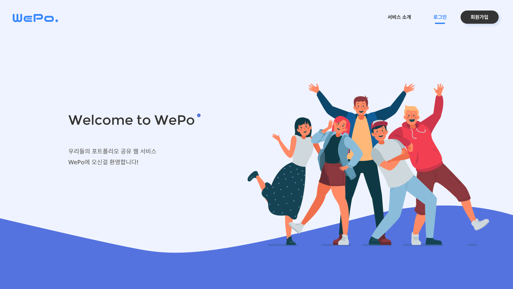

2022
WePo: 포트폴리오 공유 웹 서비스
우리들의 포트폴리오, Wepo는 개발자들의 포트폴리오 공유를 목적으로 제작된 웹 서비스입니다.

사용기술
- FE : TypeScript, React.js, Recoil, ReactQuery, ReactHookForm, Axios, styled-components
- BE : JavaScript , Node.js, Express.js, MongoDB, Mongoose